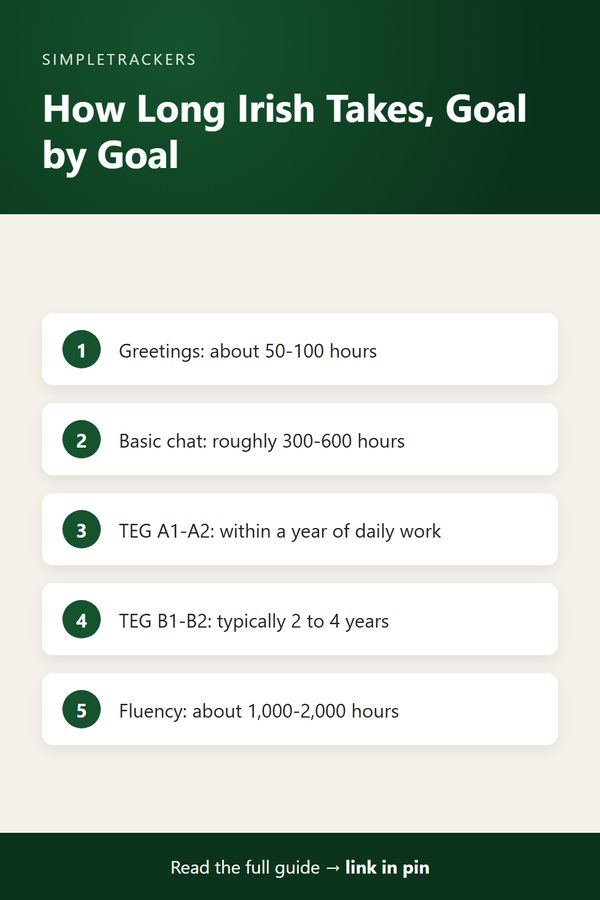

<!doctype html>
<html lang="en">
<head>
<script async src="https://pagead2.googlesyndication.com/pagead/js/adsbygoogle.js?client=ca-pub-7383810158576704" crossorigin="anonymous"></script>
<meta charset="utf-8">
<title>How Long Does It Take to Learn Irish?</title>
<meta name="viewport" content="width=device-width, initial-scale=1">
<meta name="description" content="How long does it take to learn Irish? Realistic time estimates by goal, from basic conversation to fluency, and the factors that change them.">
<link rel="canonical" href="https://ghengoy.github.io/gaeilge-tracker/how-long-does-it-take-to-learn-irish.html">
<meta property="og:type" content="article">
<meta property="og:title" content="How Long Does It Take to Learn Irish?">
<meta property="og:description" content="How long does it take to learn Irish? Realistic time estimates by goal, from basic conversation to fluency, and the factors that change them.">
<meta property="og:url" content="https://ghengoy.github.io/gaeilge-tracker/how-long-does-it-take-to-learn-irish.html">
<meta property="og:image" content="https://ghengoy.github.io/gaeilge-tracker/images/hero/how-long-does-it-take-to-learn-irish.jpg">
<meta name="p:domain_verify" content="ed2ca7fb71cecfffeba5d895002ee1d1"/>
<script data-goatcounter="https://ghengoy.goatcounter.com/count" async src="//gc.zgo.at/count.js"></script>
<style>
  :root { --accent: #14532D; --accent-dark: #0B331C; --tint: #E8F2EC; --ink: #1f2328; --muted: #5d6470;
          --line: #e4e1da; --paper: #fbfaf7; --card: #ffffff; }
  * { box-sizing: border-box; }
  body { margin: 0; background: var(--paper); color: var(--ink); font-family: -apple-system, BlinkMacSystemFont, "Segoe UI", Roboto, "Helvetica Neue", Arial, sans-serif;
         font-size: 18px; line-height: 1.75; -webkit-font-smoothing: antialiased; }
  a { color: var(--accent); text-underline-offset: 3px; }
  a:hover { color: var(--accent-dark); }
  img { max-width: 100%; height: auto; }
  .site-header { background: var(--card); border-bottom: 1px solid var(--line); }
  .site-header .inner { max-width: 760px; margin: 0 auto; padding: 14px 20px; display: flex; align-items: center; justify-content: space-between; gap: 16px; flex-wrap: wrap; }
  .brand { font-weight: 700; color: var(--ink); text-decoration: none; font-size: 17px; display: flex; align-items: center; gap: 10px; }
  .brand-mark { width: 28px; height: 28px; border-radius: 8px; background: var(--accent); display: inline-block; position: relative; }
  .brand-mark::after { content: ""; position: absolute; left: 7px; top: 8px; width: 14px; height: 3px; background: #fff; border-radius: 2px;
                       box-shadow: 0 5px 0 #fff, 0 10px 0 rgba(255,255,255,.6); }
  .site-header nav { display: flex; gap: 18px; font-size: 15px; }
  .site-header nav a { color: var(--muted); text-decoration: none; }
  .site-header nav a:hover { color: var(--accent); }
  main { max-width: 760px; margin: 0 auto; padding: 32px 20px 56px; }
  article > h1, main > h1 { font-size: clamp(30px, 5vw, 42px); line-height: 1.2; letter-spacing: -0.02em; margin: 8px 0 12px; }
  h2 { font-size: 27px; line-height: 1.3; letter-spacing: -0.01em; margin: 52px 0 14px; padding-top: 6px; scroll-margin-top: 16px; }
  h3 { font-size: 21px; line-height: 1.35; margin: 32px 0 8px; }
  p { margin: 0 0 20px; }
  ul, ol { padding-left: 1.3em; margin: 0 0 22px; }
  li { margin-bottom: 8px; }
  li::marker { color: var(--accent); }
  strong { font-weight: 650; }
  .pillar-link { font-size: 15px; margin: 0 0 4px; }
  .pillar-link a { text-decoration: none; }
  .post-meta { color: var(--muted); font-size: 15px; margin: 0 0 24px; }
  .post-hero { margin: 0 0 28px; }
  .post-hero img { width: 100%; aspect-ratio: 16 / 9; object-fit: cover; border-radius: 14px; display: block; background: var(--tint); }
  figcaption { font-size: 13px; color: var(--muted); margin-top: 8px; line-height: 1.5; }
  figcaption a { color: var(--muted); }
  .toc { background: var(--card); border: 1px solid var(--line); border-radius: 12px; padding: 18px 22px 8px; margin: 0 0 32px; font-size: 16px; }
  .toc-title { font-weight: 700; margin: 0 0 8px; font-size: 14px; letter-spacing: .06em; text-transform: uppercase; color: var(--muted); }
  .toc ol { margin: 0 0 10px; }
  .toc li { margin-bottom: 4px; }
  .toc a { text-decoration: none; }
  .key-takeaways, .callout { border-radius: 12px; padding: 20px 24px 6px; margin: 0 0 30px; }
  .key-takeaways { background: var(--tint); border-left: 5px solid var(--accent); }
  .key-takeaways ul { margin-bottom: 14px; }
  .box-title { font-weight: 700; margin: 0 0 8px; font-size: 14px; letter-spacing: .06em; text-transform: uppercase; color: var(--accent-dark); }
  .callout { background: var(--card); border: 1px solid var(--line); border-left: 5px solid var(--accent); }
  .callout.note { border-left-color: #b7791f; }
  .callout.note .box-title { color: #8a5a12; }
  .steps { list-style: none; counter-reset: step; padding-left: 0; }
  .steps > li { counter-increment: step; position: relative; padding-left: 52px; margin-bottom: 18px; }
  .steps > li::before { content: counter(step); position: absolute; left: 0; top: 0; width: 34px; height: 34px; border-radius: 50%;
                        background: var(--accent); color: #fff; font-weight: 700; font-size: 16px; display: flex; align-items: center; justify-content: center; }
  .table-wrap { overflow-x: auto; margin: 0 0 28px; border: 1px solid var(--line); border-radius: 12px; background: var(--card); }
  table { border-collapse: collapse; width: 100%; font-size: 16px; line-height: 1.5; }
  th, td { text-align: left; padding: 12px 16px; border-bottom: 1px solid var(--line); vertical-align: top; }
  th { background: var(--tint); color: var(--accent-dark); font-weight: 700; }
  tr:last-child td { border-bottom: 0; }
  .pin-figure { margin: 36px auto; max-width: 400px; text-align: center; }
  .pin-figure img { border-radius: 12px; box-shadow: 0 10px 30px rgba(0,0,0,.12); display: block; }
  blockquote { margin: 0 0 24px; padding: 4px 0 4px 20px; border-left: 3px solid var(--line); color: var(--muted); font-style: italic; }
  .post-cta { display: flex; gap: 24px; align-items: center; background: var(--card); border: 1px solid var(--line); border-top: 5px solid var(--accent);
              border-radius: 14px; padding: 24px; margin: 48px 0 8px; }
  .post-cta img { width: 150px; border-radius: 10px; flex-shrink: 0; }
  .post-cta h3 { margin: 2px 0 6px; }
  .post-cta p { margin-bottom: 12px; font-size: 16px; }
  .cta-kicker { font-size: 13px !important; letter-spacing: .06em; text-transform: uppercase; color: var(--muted); margin: 0 !important; }
  .buy-button { display: inline-block; background: var(--accent); color: #fff !important; padding: 12px 22px; border-radius: 10px; text-decoration: none; font-weight: 700; font-size: 16px; }
  .buy-button:hover { background: var(--accent-dark); }
  .product-box { background: var(--card); border: 1px solid var(--line); border-radius: 14px; padding: 24px; margin: 24px 0 36px; display: grid; grid-template-columns: 200px 1fr; gap: 0 24px; align-items: center; }
  .product-box img { width: 200px; border-radius: 10px; grid-row: span 3; }
  .product-box h3 { margin: 0 0 6px; }
  .product-box p { margin-bottom: 12px; font-size: 16px; }
  .product-grid { display: grid; grid-template-columns: repeat(auto-fill, minmax(160px, 1fr)); gap: 16px; margin: 12px 0 36px; }
  .product-card { display: flex; flex-direction: column; gap: 4px; background: var(--card); border: 1px solid var(--line); border-radius: 12px; padding: 12px; color: var(--ink); text-decoration: none; font-size: 15px; line-height: 1.4; }
  .product-card:hover { border-color: var(--accent); }
  .product-card img { width: 100%; border-radius: 8px; margin-bottom: 4px; }
  .product-card span { color: var(--muted); }
  .product-card .price { color: var(--accent); font-weight: 700; }
  .post-list { list-style: none; padding: 0; display: grid; gap: 16px; }
  .post-list li { margin: 0; }
  .post-card { display: flex; gap: 18px; background: var(--card); border: 1px solid var(--line); border-radius: 14px; overflow: hidden; color: var(--ink); text-decoration: none; }
  .post-card:hover { border-color: var(--accent); }
  .post-card img { width: 200px; object-fit: cover; flex-shrink: 0; background: var(--tint); }
  .post-card-text { display: flex; flex-direction: column; gap: 6px; padding: 16px 18px 16px 0; }
  .post-card-text strong { font-size: 19px; line-height: 1.35; }
  .post-card-desc { color: var(--muted); font-size: 15px; line-height: 1.55; }
  .post-card-date { color: var(--muted); font-size: 13px; }
  .site-footer { border-top: 1px solid var(--line); background: var(--card); color: var(--muted); font-size: 15px; }
  .site-footer .inner { max-width: 760px; margin: 0 auto; padding: 28px 20px; display: flex; justify-content: space-between; gap: 16px; flex-wrap: wrap; }
  .site-footer p { margin: 0; }
  @media (max-width: 600px) {
    body { font-size: 17px; }
    h2 { font-size: 23px; margin-top: 40px; }
    .post-cta, .post-card { flex-direction: column; }
    .post-cta img { width: 120px; }
    .post-card img { width: 100%; aspect-ratio: 16 / 9; }
    .post-card-text { padding: 0 16p
<header class="site-header"><div class="inner">
<a class="brand" href="index.html"><span class="brand-mark" aria-hidden="true"></span>Irish Self-Study</a>
<nav><a href="index.html">Guides</a><a href="pillar-guide.html">Start here</a></nav>
</div></header>
<main>
<article>
<h1>How Long Does It Take to Learn Irish?</h1>
<p class="pillar-link"><a href="pillar-guide.html">&larr; Back to the Complete Irish Gaelic Study Guide</a></p>
<p class="post-meta"><time datetime="2026-09-07">September 7, 2026</time> &middot; 5 min read</p>
<figure class="post-hero"><figcaption>Photo: <a href="https://www.flickr.com/photos/87690240@N03/34999973884" rel="nofollow">Giuseppe Milo (www.pixael.com)</a>, <a href="https://creativecommons.org/licenses/by/2.0/" rel="license nofollow">CC BY 2.0</a></figcaption></figure>
<div class="key-takeaways">
<p class="box-title">Key takeaways</p>
<ul>
<li><strong>Define "learn" first:</strong> greetings, everyday conversation, a TEG level and comfortable fluency are very different timelines.</li>
<li><strong>Rough numbers:</strong> about 50-100 hours for basic phrases, 300-600 for simple conversation, and 1,000-2,000 for comfortable fluency.</li>
<li><strong>Irish has extra hurdles:</strong> initial mutations, VSO word order, conjugated prepositions, fewer resources and several dialects.</li>
<li><strong>Count hours, not months:</strong> cumulative focused hours tell the real story.</li>
<li><strong>Track to see progress:</strong> a log of hours, vocabulary and skill balance is more reliable than feelings.</li>
</ul>
</div>
<nav class="toc" aria-label="Contents"><p class="toc-title">In this guide</p>
<ol>
<li><a href="#the-honest-answer-it-depends-on-what-learn-means">The Honest Answer: It Depends on What "Learn" Means</a></li>
<li><a href="#rough-timelines-by-goal">Rough Timelines by Goal</a></li>
<li><a href="#what-makes-irish-take-longer">What Makes Irish Take Longer</a></li>
<li><a href="#what-makes-it-go-faster">What Makes It Go Faster</a></li>
<li><a href="#why-hours-matter-more-than-months">Why Hours Matter More Than Months</a></li>
<li><a href="#how-to-know-where-you-actually-are">How to Know Where You Actually Are</a></li>
</ol></nav>
<h2 id="the-honest-answer-it-depends-on-what-learn-means">The Honest Answer: It Depends on What "Learn" Means</h2>

<p>Nearly every Irish learner asks the same question: how long does it actually take to learn Irish? The honest answer forces you to define what you mean by "learn," and that matters far more than any number.</p>

<p>Someone wanting to greet family and understand simple conversation needs a vastly different timeline than someone preparing for a TEG exam or professional fluency. Without clarifying your goal first, any timeline will feel either too optimistic or too discouraging. Let's start there.</p>

<h2 id="rough-timelines-by-goal">Rough Timelines by Goal</h2>

<div class="table-wrap">
<table>
<thead><tr><th>Goal</th><th>Rough timeline</th></tr></thead>
<tbody>
<tr><td>Basic phrases and greetings</td><td>A few weeks of casual study: perhaps 50-100 cumulative hours</td></tr>
<tr><td>Simple everyday conversation</td><td>Several hundred cumulative hours, often 300-600, over months of consistent daily practice</td></tr>
<tr><td>TEG lower levels (A1, A2)</td><td>Reachable within a year with focused daily study</td></tr>
<tr><td>TEG mid levels (B1, B2)</td><td>Typically two to four years</td></tr>
<tr><td>Comfortable fluency</td><td>Often 1,000-2,000 cumulative hours over several years</td></tr>
</tbody>
</table>
</div>

<h3>What each goal involves</h3>
<ul>
<li><strong>Basic phrases and greetings.</strong> Memorizing how to say hello, introduce yourself and exchange pleasantries. Irish doesn't share vocabulary with English like Spanish or French do, so prior language knowledge offers limited advantage.</li>
<li><strong>Simple everyday conversation.</strong> Holding a basic conversation about familiar topics, with active use of all four skills (listening, reading, speaking, writing). You need common vocabulary, verb conjugations, and willingness to make mistakes with native speakers.</li>
<li><strong>TEG mid-level exams.</strong> B1 and B2 demand confidence in grammar nuances, larger vocabulary, and understanding native speech at normal pace. The exact timeline depends on your current level, weekly hours and access to native speakers.</li>
<li><strong>Comfortable fluency.</strong> Listening to Irish radio with understanding, reading without constant dictionary lookups, and joining native conversations naturally, with consistent practice across all four skills.</li>
</ul>

<figure class="pin-figure">

<figcaption>Save this summary to Pinterest for later.</figcaption>
</figure>

<h2 id="what-makes-irish-take-longer">What Makes Irish Take Longer</h2>

<p>Every language learner knows that some languages come faster than others. Irish presents particular challenges that can extend timelines:</p>

<ul>
<li><strong>Initial mutations.</strong> The mutations séimhiú and urú transform word beginnings in ways that are grammatically essential but have no parallel in English. A learner who studies passively through listening might recognize both forms but never understand the rule underlying them. When speaking, they'll produce incorrect forms. This adds weeks or months to the timeline for genuine active mastery.</li>
<li><strong>Word order.</strong> Irish uses VSO (verb-subject-object) in many contexts rather than English's SVO pattern. This isn't a mere cosmetic difference: it changes how grammar conjugations work and how you construct meaning.</li>
<li><strong>Conjugated prepositions.</strong> "In" or "on" combine with pronouns to create single words that English must express as phrases, creating similar friction.</li>
<li><strong>Fewer learner resources.</strong> Compared with major languages like Spanish or French, finding engaging listening material for intermediate learners, or conversations with people motivated to speak slowly, is harder.</li>
<li><strong>Multiple regional dialects.</strong> Each has pronunciation and vocabulary differences, which can confuse learners who encounter different speakers early on.</li>
</ul>

<h2 id="what-makes-it-go-faster">What Makes It Go Faster</h2>

<p>Progress accelerates under certain conditions:</p>

<ul>
<li><strong>Consistent daily practice.</strong> Even thirty minutes compounds faster than occasional binges.</li>
<li><strong>Speaking aloud from early stages.</strong> This trains your mouth to form sounds correctly.</li>
<li><strong>Practicing all four skills.</strong> This prevents dead-end specialization.</li>
<li><strong>Real listening input.</strong> Irish radio or podcasts train your ear to native patterns and pace far better than lesson recordings.</li>
</ul>

<div class="callout tip">
<p class="box-title">Connection matters most</p>
<p>Learners motivated by family heritage or genuine relationships with Irish speakers progress faster than those learning for external reasons.</p>
</div>

<h2 id="why-hours-matter-more-than-months">Why Hours Matter More Than Months</h2>

<p>A learner studying thirty minutes daily will progress faster than someone studying thirty minutes weekly, even though both might call their effort "regular." Yet when asked how long learning Irish takes, most people answer in months or years rather than hours.</p>

<div class="callout note">
<p class="box-title">The hidden trap in timeline questions</p>
<p>Months are meaningless without knowing what happens in those months. Six months studying for an hour every single day is fundamentally different from six months with sporadic weekend sessions.</p>
</div>

<p>The cumulative hours tell the real story. You'll make faster progress with one hundred hours of focused study over three months than you will with one hundred hours scattered across two years.</p>

<h2 id="how-to-know-where-you-actually-are">How to Know Where You Actually Are</h2>

<p>Self-assessment is notoriously unreliable for language learners. You might feel like you're making no progress for months, then suddenly realize you understand entire conversations.</p>

<p>Conversely, after an intensive week you might feel fluent, only to discover gaps when you try to produce Irish under pressure. Progress feels most invisible in the middle stages, exactly when you need evidence the most.</p>

<p>This is where tracking your actual study hours matters. A useful log records:</p>

<ul>
<li>Cumulative study hours</li>
<li>Vocabulary count</li>
<li>Minutes spent on each skill</li>
<li>Practice streaks</li>
<li>Mock exam scores over time, which show whether you're trending toward readiness far better than any feeling</li>
</ul>

<p>The tracker makes the invisible visible, and that visibility keeps you moving forward when motivation fades.</p>

<p>The real timeline for learning Irish isn't measured in a fixed number of months or years. It's measured in cumulative hours of genuine study, consistency across all four skills, connection to native speakers, and honesty about where you actually stand. Use the Irish Gaelic Self-Study Progress Tracker at <a href="https://kimnet8.gumroad.com/l/kanmzp">https://kimnet8.gumroad.com/l/kanmzp</a> to log your hours, track your skill balance, and see your real progress emerge from the data rather than relying on feelings alone. You'll know exactly how far you've come and exactly what your next phase requires.</p>

<aside class="post-cta">

<div><p class="cta-kicker">Make it easy to keep track</p>
<h3>Irish Gaelic Self-Study Progress Tracker</h3>
<p>A ready-to-use spreadsheet and guide for logging your study sessions and seeing real progress.</p>
<p><a class="buy-button" href="https://kimnet8.gumroad.com/l/kanmzp">Get the Tracker &middot; $15.99</a></p></div>
</aside>

</article>
</main>
<footer class="site-footer"><div class="inner">
<p><a href="https://gaeilge-tracker.beehiiv.com/subscribe">Get an email when new guides go live</a></p>
<p>&copy; 2026 <a href="/">SimpleTrackers</a> &middot; <a href="/about.html">About</a> &middot; <a href="/contact.html">Contact</a> &middot; <a href="/privacy.html">Privacy</a></p>
</div></footer> href="https://gaeilge-tracker.beehiiv.com/subscribe">Get an email when new guides go live</a></p>
<p>&copy; 2026 SimpleTrackers</p>
</div></footer>
</body>
</html>
